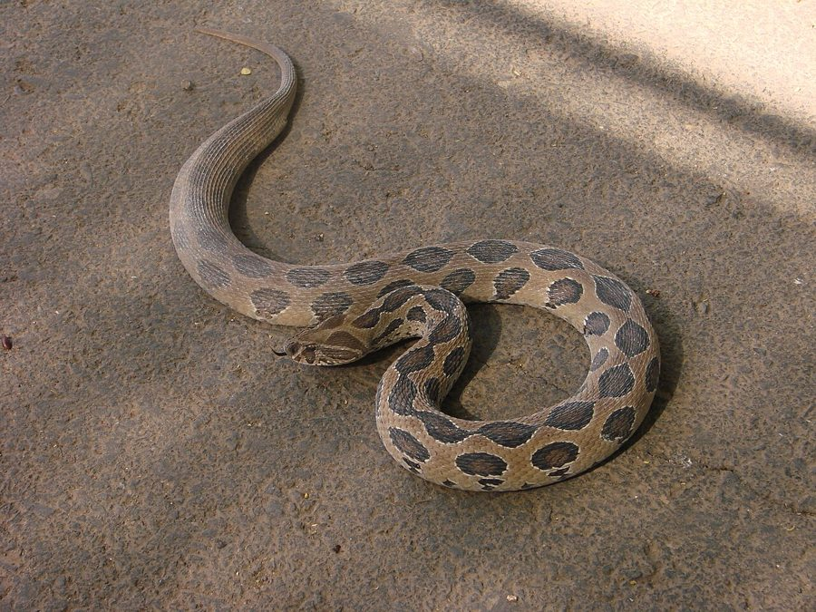

कोरिआलाRussell's Viper
Daboia russelii · Viperidae · REP-0010

- Scientific name
- Daboia russelii (Shaw & Nodder, 1797)
- Family
- Viperidae
- Hindi
- कोरिआला
- Status here
- native
- IUCN
- LC
When to look कब देखें
Present all year.
कोरिआला / Russell's Viper
Daboia russelii (Shaw & Nodder, 1797) — Viperidae
कोरिआला (रसेल्स वाइपर) — भारतीय उपद्वीप का एक अत्यंत विषैला और भारी शरीर वाला सांप है, जो भारत के "बिग फोर" (चार प्रमुख विषैले सांप) में शामिल है। इसका शरीर गठीला और सिर विशिष्ट रूप से त्रिकोणीय (triangular) व गर्दन से अलग होता है। इसके भूरे या पीले-भूरे शरीर पर गहरे भूरे रंग के अंडाकार (oval) धब्बों की तीन कतारें होती हैं, जो देखने में एक जंजीर (chain-like pattern) जैसी लगती हैं। यह सांप मुख्य रूप से चूहों का शिकार करने के लिए गन्ने और गेहूं के खेतों के आस-पास रहता है। जब इसे खतरा महसूस होता है, तो यह अपने फेफड़ों में हवा भरकर प्रेशर कुकर की तरह बहुत तेज फुफकार (hissing sound) पैदा करता है। इसका जहर रक्त-विघटनकारी (haemotoxic) होता है, जिससे शरीर में आंतरिक रक्तस्राव और गुर्दे (kidney) फेल होने का गंभीर खतरा रहता है।
Quick Identification त्वरित पहचान
| Feature | Description |
|---|---|
| Form | Stout, heavy-bodied snake; tail is short and tapers rapidly |
| Head | Distinctly triangular, flat-topped, and twice as wide as the neck; snout is blunt and raised |
| Markings | Three longitudinal rows of dark brown oval spots with black borders and white edges, forming a chain-like pattern |
| Scales | Heavily keeled (ridged) dorsal scales, giving the snake a rough, dry texture |
| Nostrils | Extremely large and conspicuous, positioned on the sides of the snout |
| Eyes | Large, with gold-flecked irises and distinct vertical, slit-like pupils |
| Defence | Coils tightly, raises the front of its body, and produces a remarkably loud, continuous pressure-cooker-like hiss |
Field tip: Any thick-bodied snake with a distinct triangular head, vertical pupils, and a chain-like pattern of dark brown oval rings along its back is a Russell's Viper. If cornered, it will hiss loudly. Do not approach or attempt to capture it; keep a distance of at least 5 metres.
Morphology आकारिकी
Biometrics (typical measurements for adult specimens in eastern UP plains):
| Measurement | Range |
|---|---|
| Tail length | 15–20 cm |
| Total length | 100–140 cm |
| Weight | 800–1500 g |
Dorsal pattern: The ground colour is light brown, yellow-brown, or sand colour. The back features 23–30 dark brown oval spots arranged in three rows: one central row down the backbone and one row on each side. These spots are outlined in black and have an outer ring of white or cream. On the head, there is a distinct pinkish or light-coloured V-shaped mark pointing forward.
Scales: Dorsal scales are in 27–33 rows at midbody and are strongly keeled, except for the lowest row. The head is covered with small, irregular, strongly keeled scales rather than large shields.
Fangs: Solenoglyphous dentition. Possesses a pair of long, curved, hollow fangs on the rotational maxillary bone at the front of the upper jaw. The fangs can exceed 15–18 mm in length and fold back against the roof of the mouth when closed.
Behaviour & Ecology व्यवहार और पारिस्थितिकी
Terrestrial ambush predator.
- Hunting strategy: Relies on crypsis (camouflage) and remains coiled silently in dry grass or agricultural borders for hours, waiting for rodents. Once a rodent passes, it strikes with lightning speed, injects venom, releases the prey, and follows the scent trail after the prey dies.
- Crepuscular and nocturnal: Active during twilight and night hours in the summer and monsoon, but basks in daylight during the cool winter months.
- Hissing threat display: When cornered, it coils tightly in an S-shape, flattens its body to appear larger, and draws in air to produce a very loud, continuous, high-pitched hiss. This sound serves as an warning to large animals and humans.
Ecological Role पारिस्थितिक भूमिका
Rodent regulator. As a specialist rodent hunter, the Russell's Viper is a key regulator of pest rodent populations (such as the Lesser Bandicoot Rat [MAM-0013 Lesser Bandicoot Rat]) in the agricultural landscape of Basti. By keeping rodent populations in check, it indirectly reduces damage to standing crops and stored grains.
Life Cycle / Phenology जीवन चक्र
- Breeding: Mating takes place between February and April. Males engage in ritual combat, raising the front halves of their bodies and wrapping around each other to push the opponent down.
- Ovoviviparous reproduction: Unlike most snakes, the Russell's Viper is ovoviviparous (gives birth to live young). The eggs develop inside the female's body.
- Birth: Females give birth to a large litter of 20 to 40 (rarely up to 60) active, independent young between July and September (coinciding with the monsoon).
- Young: Newborn young measure 20–25 cm in length and are fully venomous from birth.
Host Plants or Prey आहार
Carnivorous diet:
- Primary prey: Small mammals, especially mice (Mus musculus), Lesser Bandicoot Rats (
[MAM-0013 Lesser Bandicoot Rat]), and shrews ([MAM-0015 Asian House Shrew]). - Alternative prey: Young birds, lizards, and frogs (e.g.,
[AMP-0006 Asian Grass Frog]).
Predators / Natural Enemies शत्रु
- Mongoose: The Indian Grey Mongoose (
[MAM-0002 Mongoose]) is a formidable predator, utilizing agility to avoid strikes and crush the viper's skull. - Raptors: Crested Serpent Eagles and Black-shouldered Kites (
[BRD-0038 Black-winged Kite]) occasionally hunt young vipers.
Agricultural / Human Relevance कृषि प्रासंगिकता
Conflict in fields. The high density of rodents in sugarcane and wheat fields draws Russell's Vipers close to human agricultural activities. Farmers harvesting crops by hand or clearing weeds are at high risk of accidental bites, as the snake's brown coloration blends perfectly with dry soil and crop debris, leading to accidental stepping.
Safety and First Aid सुरक्षा और प्राथमिक चिकित्सा
[!WARNING]
Venom type: Primarily haemotoxic with some neurotoxic components. It contains enzymes that activate blood clotting factors, leading to massive internal bleeding, tissue necrosis at the bite site, drop in blood pressure, and acute kidney injury.
The dry strike myth: While some strikes are defensive "dry bites" (no venom injected), any bite from a Russell's Viper must be treated as a medical emergency. Do not wait for symptoms.
Prevention rules:
- Wear thick leather boots and long trousers when working in fields.
- Use a stick (lathi) to disturb the grass ahead of you when walking through dense vegetation.
- Always use a strong flashlight when walking near field margins at night.
First aid rules (in case of a bite):
- DO NOT apply a tight tourniquet or rope. This cuts off blood flow and concentrates the haemotoxic venom, causing severe tissue death (gangrene) and leading to limb amputation.
- DO NOT cut the bite area or try to suck out the venom.
- DO NOT apply ice, herbal pastes, or chemicals to the wound.
- DO reassure the victim and keep them completely still to slow down venom circulation.
- DO immobilize the bitten limb using a splint and a loose crepe bandage.
- DO transport the patient immediately to a government hospital where Polyvalent Anti-Snake Venom (ASV) is available. ASV is the only antidote.
Expected Locally स्थानीय रूप से अपेक्षित
Not a field record. Written from published accounts for eastern Uttar Pradesh. No confirmed local sighting yet — if you have seen it, that is what the atlas needs.
अभी तक स्थानीय पुष्टि नहीं। यह विवरण प्रकाशित स्रोतों से है, किसी अवलोकन से नहीं।
Commonly encountered in the sugarcane fields and dry alluvial banks of the Ghaghra River in Harraiya and Vikramjot blocks of Basti district. Bite cases show a sharp increase during the sugarcane harvesting season (November–January) and monsoon weeding periods.
Distribution वितरण
Global range: Widespread across South Asia, including Pakistan, India, Nepal, Bhutan, Bangladesh, and Sri Lanka.
In India: Found throughout the plains and low hills, from Punjab in the north to Tamil Nadu in the south.
In Uttar Pradesh: Present in all agricultural plain districts, particularly common in the Terai belt and eastern monsoon plains.
In Basti district / eastern UP: Highly resident in agricultural and floodplain zones.
Research Questions शोध प्रश्न
- How does the seasonal crop cycle of sugarcane in Basti correlate with the frequency of Russell's Viper encounters and snakebite incidents? / बस्ती में गन्ने की कटाई के मौसम और कोरिआला सांप के काटने की घटनाओं में क्या संबंध है?
- What is the primary microhabitat preference of juvenile Russell's Vipers in river floodplain zones during the monsoon floods? / मानसून की बाढ़ के दौरान नदी के मैदानी इलाकों में रसेल्स वाइपर के बच्चों की सूक्ष्म-आवास प्राथमिकता क्या है?
- Does the introduction of solar-powered farm machinery reduce the incidence of accidental viper bites among local farmers?
- What percentage of Russell's Viper bites treated at Basti District Hospital result in acute kidney injury?
- How can simple community-led educational programs improve correct snakebite first-aid practices in rural Basti? / ग्रामीण बस्ती में सही प्राथमिक चिकित्सा पद्धतियों को बढ़ावा देने के लिए सामुदायिक जागरूकता कार्यक्रम कितने प्रभावी हैं?
Similar Species मिलती-जुलती प्रजातियाँ
| Species | Key Difference | हिंदी |
|---|---|---|
Echis carinatus (Saw-scaled Viper [REP-0011]) | Much smaller (38–55 cm); distinct white trident-shaped mark on the head; threat display involves rubbing body scales to make a sawing sound. | फुरसा — छोटा आकार, सिर पर त्रिशूल निशान |
| Python bivittatus (Burmese Python) | Much larger (reaches 3–5 m); boxy, irregular dark blotches (not neat oval chains); head has large shields and lacks the neck constriction. | अजगर — बहुत बड़ा आकार, बड़े शल्क |
Fowlea piscator (Checkered Keelback [REP-0002]) | Non-venomous; slender head; checkered black spots on a yellow-green body; lacks the large nostrils and vertical pupils; semi-aquatic. | डोडिया सांप — हानिरहित, पानी के पास |
Taxonomy & Classification वर्गीकरण
Original description. George Shaw and Frederick Polydore Nodder described the Russell's Viper as Coluber russelii in 1797 in The Naturalist's Miscellany (Vol. 9, plate 291). The species was named in honour of Dr. Patrick Russell, the Scottish herpetologist who first studied the snake's venom and documented its differences from non-venomous species. It was later moved to the genus Daboia Gray, 1842. The genus name Daboia is derived from the Hindi word Daboia (दबोइया), meaning "the lurker" or "that which lies hidden."
Subspecies. Monotypic — no subspecies are currently recognised.
Family and order placement. Placed in the order Squamata, suborder Serpentes, family Viperidae, subfamily Viperinae.
Phylogenetic notes. Daboia russelii represents a basal lineage within the true Old World vipers. The genus Daboia was resurrected to include several former Vipera species based on molecular evidence showing monophyly.
IUCN status rationale. Listed as Least Concern (LC) by the IUCN Red List due to its extremely wide geographic range, high population density, and high tolerance of human-altered agricultural landscapes. However, it faces localized mortality from human persecution and vehicular traffic.
Photo Gallery फोटो गैलरी
References संदर्भ
- Shaw, G. & Nodder, F. P. (1797). The Naturalist's Miscellany, Vol. 9, pl. 291. [original description]
- Smith, M.A. (1943). The Fauna of British India, Ceylon and Burma: Reptilia and Amphibia. Vol. 3 — Serpentes. Taylor & Francis, London.
- Whitaker, R. & Captain, A. (2004). Snakes of India: The Field Guide. Draco Books, Chennai.
- World Health Organization (2016). Guidelines for the Management of Snakebites in Southeast Asia. WHO Regional Office, New Delhi.
- IUCN SSC Snake and Lizard Specialist Groups (2024). Daboia russelii. IUCN Red List of Threatened Species.
- Wüster, W. (1998). The genus Daboia (Serpentes: Viperidae): systematic review, species limits and systematics. Journal of Herpetology, 32(1): 1–15.
- GBIF Occurrence Data — Daboia russelii, South Asia (2026). GBIF taxon key: 8602156.
Source file: species/fauna/reptiles/russells_viper.md